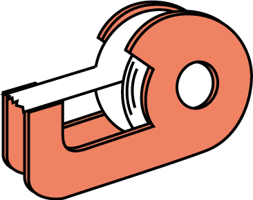
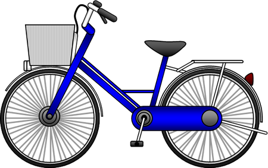
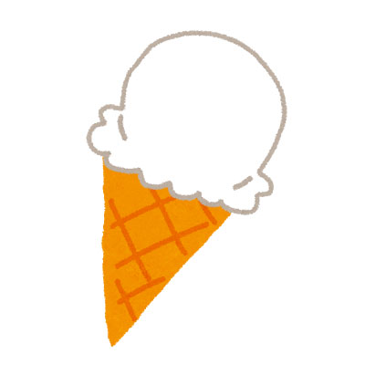
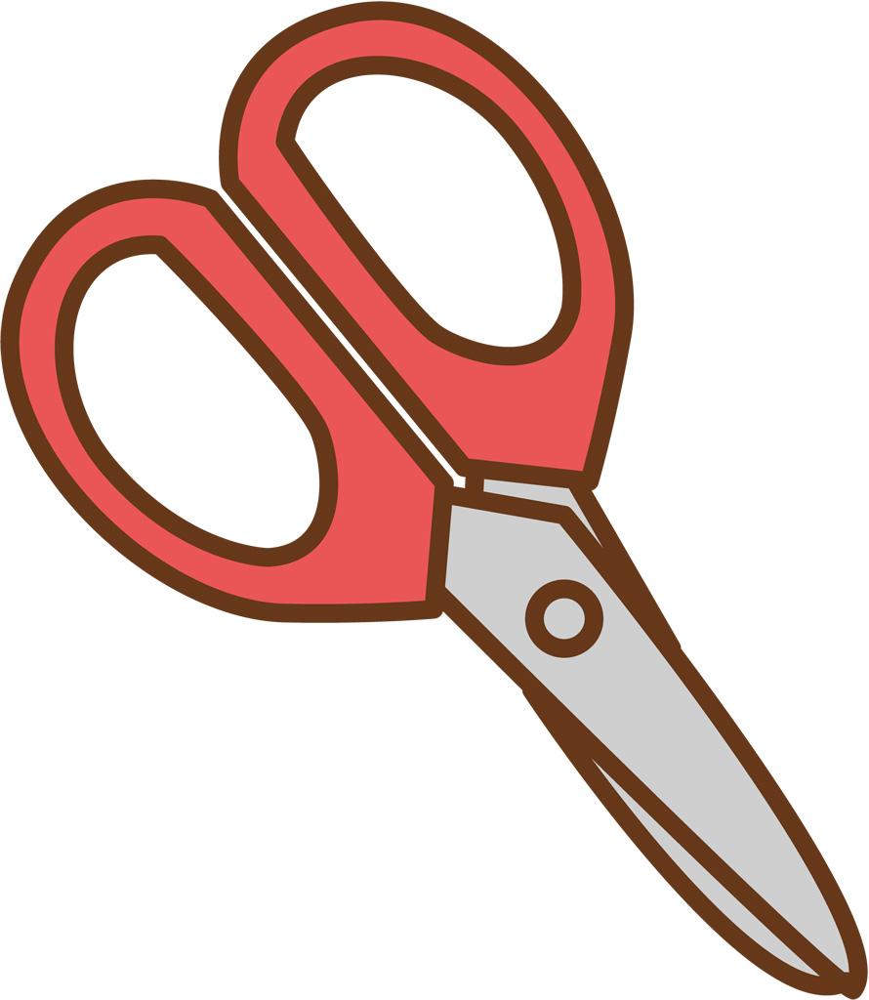
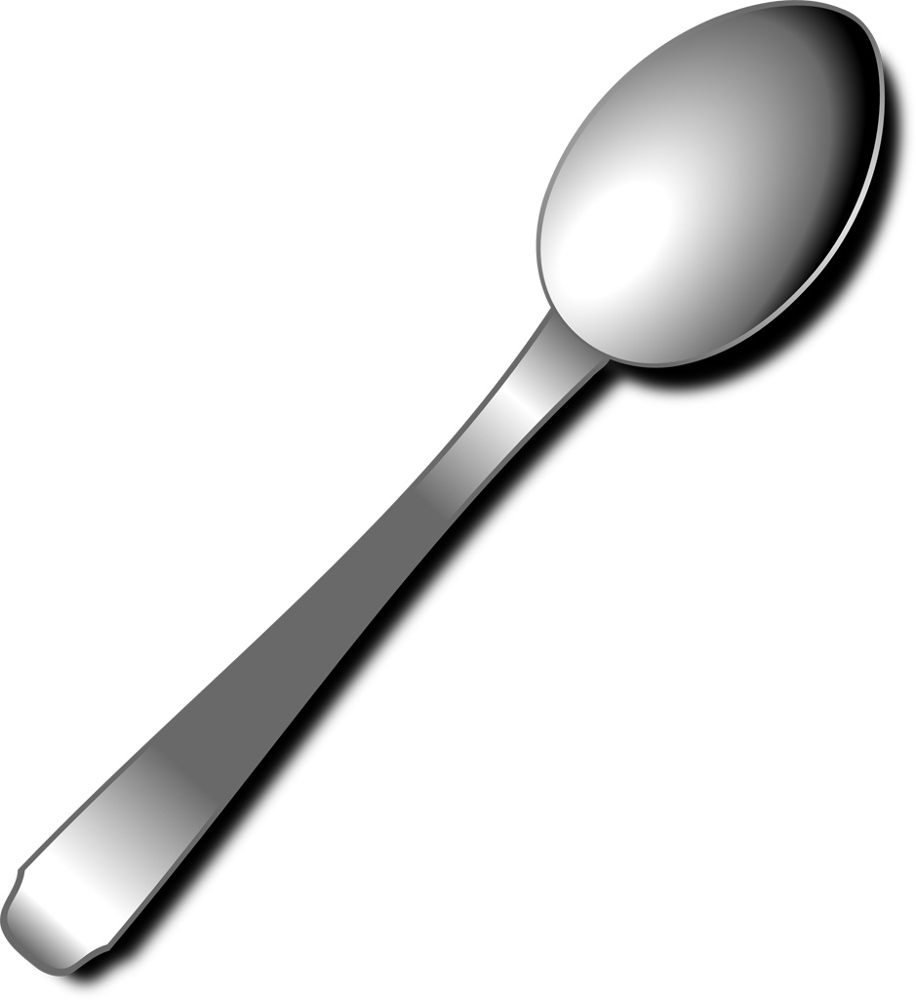

⚠ Nghiêm cấm gian lận！Nếu đóng ứng dụng hoặc chuyển tab sẽ bị coi là GIAN LẬN và bị ghi lại.
⚠️
このテストはSafariで開いてください
Vui lòng mở bài kiểm tra bằng Safari
LINEのブラウザではカンニング防止機能が正しく動作しません。
📋 手順 / Cách mở:
1. 右下の … または ⋮ をタップ
2. 「ブラウザで開く」 を選択
3. Safari で開く
このページはLINEブラウザでは受験できません。
語彙テスト（Bài kiểm tra từ vựng）
問題１．Hãy chọn từ đúng cho mỗi hình ＜各1点×10問＝10点＞
①
②
③
④
⑤
⑥
⑦
⑧
⑨
⑩
問題２．Chuyển sang tiếng Nhật（日本語で書いてください） ＜各3点×8問＝24点＞
 |
 |
 |
 |
| １） |
２） |
３） |
４） |
 |
|
 |
 |
| ５） |
６） |
７） |
８） |
問題３．読み方を書いてください ＜各1点×13問＝13点＞
Hãy viết cách đọc bằng Hiragana.
月の読み方 （読みかたを日本語で書いてください）
時の言葉
日の読み方
問題４．正しいものを選んでください ＜各2点×5問＝10点＞
Hãy khoanh tròn đáp án đúng.
問題５．反対の意味の言葉を書いてください ＜各1点×7問＝7点＞
Hãy viết từ có nghĩa ngược lại bằng Hiragana.
問題６．Tiếng Nhật ⇔ Tiếng Việt ＜各2点×18問＝36点＞
Hãy viết nghĩa tiếng Việt.（ベトナム語の意味を書いてください）
文法テスト（Bài kiểm tra ngữ pháp）
問題１．Hãy điền trợ từ thích hợp ＜各1点×13問＝13点＞
Hãy điền trợ từ đúng vào（ ）.
Ví dụ） きのう（は）日曜日でした。
１） 時間（）ありません（）、新聞を読みません。
２） かばんの（）財布がありますか。
３） ベトナム語（）「ありがとう」は何ですか。― ベトナム語（）わかりません。
４） 母（）電話（）かけます。
５） いつ日本（）行きますか。― 3月18日（）飛行機（）行きます。
６） スーパー（）ジュースを買いました。おいしくないです（）、安いです。
７） 1年（）1回ベトナムを旅行します。
問題２．Hãy chọn từ đúng ＜各2点×5問＝10点＞
正しい言葉を選んでください。
１） 日曜日いっしょにテニスを（
）。
２） 寮の生活は（
）。
３） 加藤さんは（
）ベトナムを旅行しますか。―1か月旅行します。
４） すみません、牛乳はどこに（
）か。
５） 山口さんから花を（
）。
問題３．Sắp xếp theo thứ tự đúng ＜各3点×5問＝15点＞
タイルをタップして正しい順に並べてください。もう一度タップすると戻ります。
問題４．会話を完成してください ＜各2点×7問＝14点＞
Chọn từ A-H để điền vào chỗ trống.
A: いかがですか B: 行きましょう C: ちょっと D: 残念ですが
E: はい。どうぞ F: いただきます G: 借りましたか H: 行きませんか
① A：グエンさん、図書館でどんな本を（）。
B：『ハリー・ポッター』です。
② A：いらっしゃい。コーヒーは（）。
B：ありがとうございます。（）。
③ A：ここに映画のチケットがあります。今週の日曜日（）。
B：いいですね、（）。
④ A：加藤さん、昼に一緒にごはんを食べましょう。
B：（）、用事がありますから…。晩にごはんを食べましょう。
A：すみません。晩は（）…。友だちとサッカーをしますから。
問題５．⚠ 絵を見て位置を書いてください ＜各3点×4問＝12点＞
※ この問題は先生が採点します。絵を見て、答えを書いてください。
問題６．○か×を書きましょう。 ＜各2点×5問＝10点＞
私はミラーです。私の会社はSOYOTAです。毎日９時から６時まで、働きます。昼に１時間休みます。町は小さいですが、電車があります。しかし、私はバイクで会社へ行きます。私の会社は、車を売ります。車は１台１００万円から５００万円です。車は安くないですが、とても人気です。
例）ミラーさんはSOYOTAの会社員です。（ ○ ）
１） ミラーさんは毎日８時間ぐらい働きます。
２） 私は電車で学校へ行きます。
３） 車は２台で２００万円から１０００万円です。
４） 男の人はよく車を買います。
５） 車は安いですから、とても人気です。
問題７．同じ日本語に○か×を書きましょう。 ＜各2点×10問＝10点＞
例）あの方はリン先生です。＝（ × ）リン先生はこちらです。（ ○ ）あそこにリン先生がいます。
１）クイン先生は私に日本語を教えました。
a）クイン先生と日本語を勉強しました。 →
b）クイン先生に日本語を習いました。 →
２）アインさんに本を借りました。
a）アインさんは私に本を貸しました。 →
b）アインさんと本を読みました。 →
３）ターニャさんは料理が上手じゃありません。
a）ターニャさんはごはんが嫌いです。 →
b）ターニャさんのごはんはおいしくないです。 →
４）A「明日映画を見ましょう。」B「明日は友だちと約束がありますから…。」
a）明日映画を見ません。 →
b）明日友だちがいません。 →
５）A「会社を何日休みましたか。」B「4日休みました。」
a）11月4日の金曜日に休みました。 →
b）月曜日から木曜日まで休みました。 →
問題８．⚠ 質問に答えてください ＜各4点×4問＝16点＞
※ この問題は先生が採点します。日本語で答えてください。
１） 1か月に何回うちへ帰りますか。
２） あなたはどのくらい日本語を勉強しましたか。
３） あなたのクラスに女の人が何人いますか。
４） もう日本語の辞書を買いましたか。
聴解テスト（Bài kiểm tra nghe hiểu）
🔊 Tốc độ phát:
問題１．カリーナさんは今日何をしますか ＜各4点×2問＝8点＞
Nghe và chọn đáp án đúng.
a. 友だちに会います b. 花見をします c. 日本語を勉強します
d. 昼ごはんを食べます e. ビールを飲みます f. 映画を見ます
問題２．A or B？ ＜各3点×2問＝6点＞
① 問１
② 問２
問題３．どうして？ ＜各2点×2×2問＝8点＞
理由を聞いて選んでください。
a. お金 b. 仕事 c. 休み d. 用事 e. 約束 f. 時間
① 問１
理由：
→
② 問２
理由：
→
問題４．リーさんは今何をしますか ＜各3点×2問＝6点＞
問題５．何を買いましたか ＜各3点×2問＝6点＞
問題６．グプタさんは何と言いましたか ＜各3点×2問＝6点＞
① 問１
② 問２
問題７．どうやって行きますか ＜各2点×6問＝12点＞
ルートごとに交通手段を選んでください。
a. バス b. 地下鉄 c. 船 d. 新幹線 e. 飛行機 f. タクシー
① 学校 → 地下鉄の駅：
② 駅 → 新大阪：
③ 新大阪 → 広島：
④ 広島 → 松山：
⑤ 松山 → 大阪：
⑥ 大阪 → 学校：
問題８．女の人は今どこにいますか ＜各3点×2問＝6点＞
問題９．スケジュールを聞いて答えてください ＜各3点×3問＝9点＞
※ 下のスケジュール表を見て、音声を聞いて答えてください。
①
②
③
問題１０．絵と音声を合わせてください ＜各2点×4問＝8点＞
音声を聞いて、正しい絵を選んでください。
問題１１．○・✕で答えてください ＜各2点×5問＝10点＞
Nghe đoạn hội thoại, xem câu kế tiếp đúng hay sai → ○（đúng）/ ✕（sai）
問題１２．⚠ 質問を聞いて答えてください ＜各3点×5問＝15点＞
※ この問題は先生が採点します。音声の質問を聞いて、日本語で答えてください。
✅ Đã hoàn thành bài kiểm tra
Hãy nhấn nút bên dưới để gửi kết quả cho giáo viên.
語彙テスト
-
/ 100点（自動採点分）
文法テスト
-
/ 100点（自動採点分）
聴解テスト
-
/ 100点（自動採点分）
⚠ 黄色マーク（⚠）の問題は先生が採点します。上記スコアには含まれていません。
採点が終わったら、結果を先生に送信してください。